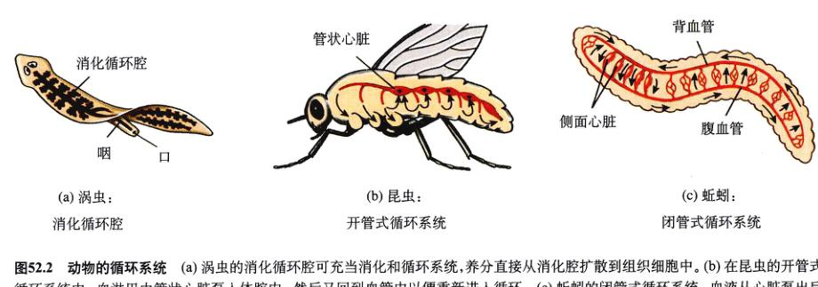
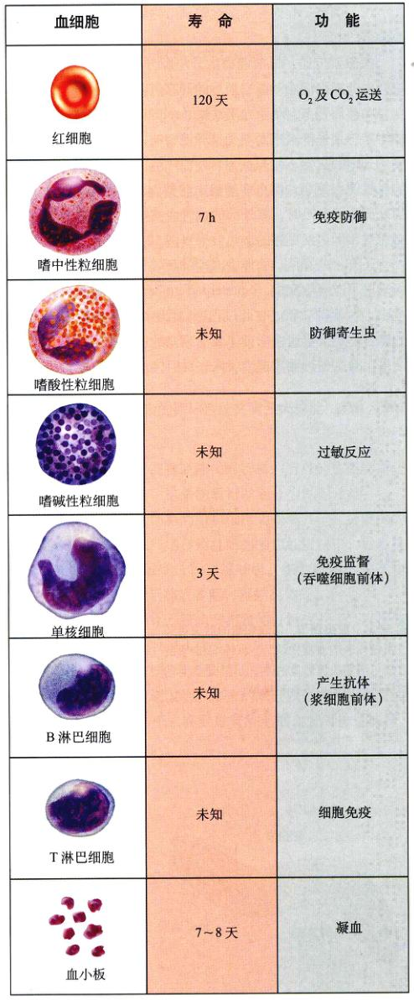
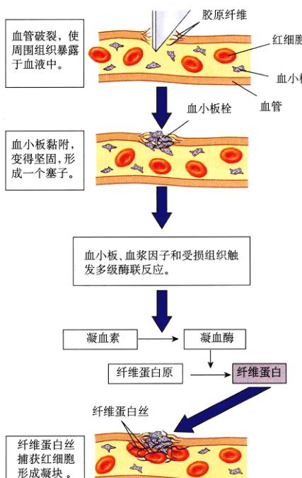
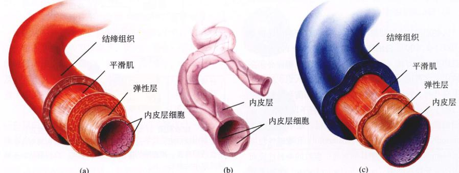
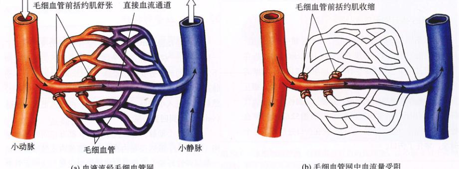
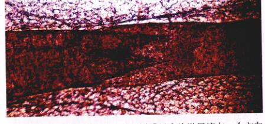
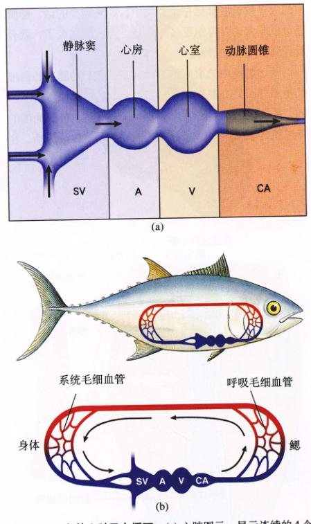
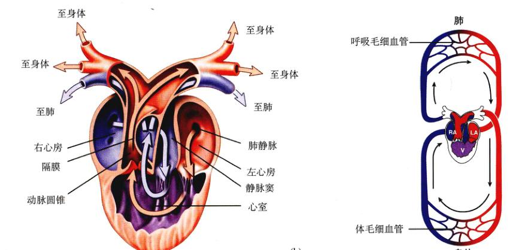
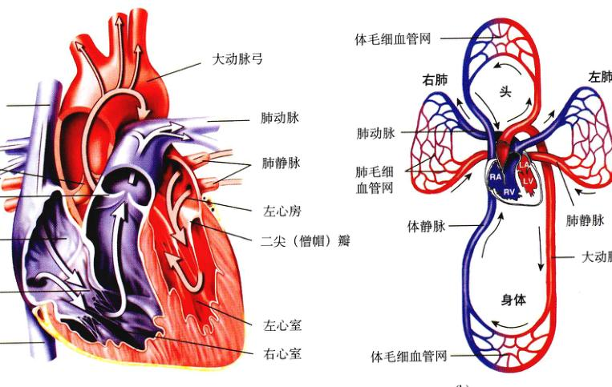
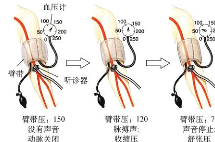

图 52.1 红细胞 这是用电子扫描显微镜观察到的血管断面图，图中血管内充满着红细胞，它们在血管中穿梭，并将氧气送到身体的不同部位。
动物体内所有的细胞都需要从食物分子中获得能量以维持生存。就像城市中的居民，由农村提供给他们所需的食物一样，体内的细胞也需要“卡车”来运送食物，需要“高速公路”来供“卡车”行驶，还需要提供一种“烹饪”食物的方法。在动物体内，循环系统提供了血液和血管（“卡车”和“高速公路”），这是我们本章所要讨论的问题（图 52.1）。消化系统和呼吸系统，提供了新陈代谢的必需品：葡萄糖（食物）和氧气（烹饪食物的燃料），前者我们在上章已经讨论过了，后者将在下一章讨论。
单细胞原生生物以扩散的方式从外部液体环境中直接接触得到氧气和养分。多细胞动物（如水螅）的体壁只有两层，每层细胞壁都直接与一种环境接触，即外环境或消化循环腔 (gastrovascular, 见图 52.2a)。水螅的消化循环腔从体腔一直延续到触手，而涡虫的则高度分支，延伸到各个细胞处，为它们提供了氧气与养分。体型较大的动物，它们的组织都由多层细胞组成，因此细胞既不是远离外部环境，就是远离消化腔，这样便很难利用扩散作用直接吸收氧气和养分。于是，这些动物便发展了循环系统，利用体液把外界环境及消化腔中的氧气和养分运送给各个细胞。
动物共有两种循环系统：开放式和封闭式。在开管式循环系统 (open circulatory system) 中，如软体动物和节肢动物（图 52.2b），循环液（如血液）与细胞外液（体液或淋巴）是没有区别的，这种液体被称为血淋巴 (hemolymph)。在昆虫体内，心脏就是一个肌肉管，将血淋巴泵至身体的网状管道及体腔中，然后再泵回到围心腔内。
在闭管式循环系统 (closed circulatory system) 中，循环液即血液总是与体液分开，由心脏泵出，随后又回到心脏。环节动物（见第45章）及所有的脊椎动物都是封闭式循环的。在环节动物中，如蚯蚓，背血管有节奏地收缩，类似泵的作用。血液先经5个相连的小动脉（同样起着泵的作用）到达腹血管，然后向后流动直至重新回到背血管中。从各支脉分出的小血管遍布各组织，给蚯蚓提供了氧气和养分，同时也运送了代谢废物（图 52.2c）。
图 52.2 动物的循环系统 (a) 涡虫的消化循环腔可充当消化和循环系统，养分直接从消化腔扩散到组织细胞中。(b) 在昆虫的开管式循环系统中，血淋巴由管状心脏泵入体腔内，然后又回到血管中以便重新进入循环。(c) 蚯蚓的闭管式循环系统，血液从心脏泵出后仍在血管中流动，然后回到心脏，所有的脊椎动物都有相同的闭管式循环系统。
(2) 调节：心血管系统运送调节性激素，并参与体温调节。
还有一些脊椎动物能在寒冷的环境下保持热量，它们采用了逆流热交换 (countercurrent heat exchange) 的方法（参阅第53章）。在此过程中，运输来自体内的温血的血管，紧挨着运输来自体表的凉血的血管（图 52.4），结果，温血将热量传送给从体表返回体内的凉血中。所以，当血流回体内时，已经是温血了。
(3) 保护：循环系统可以治愈伤口，阻止外源微生物及有毒物质进入体内。
图 52.3 散热调节 体表热量的散失可通过流过体表的血液来调节。(a) 体表血管的收缩可限制血流量及散热。(b) 体表血管的扩张可以增加血流量和散热。
图 52.4 逆流热交换 许多海洋动物，如虎鲸，利用逆流热交换的方法来减少在冷水中的热损失。由体内动脉中泵出的温血将热量传送给流回体内的体表的静脉血，这样使动物能在冷水中保持体内恒定的温度，减少动脉血中的热量损失。
血液由液体的血浆及在其中循环的多种血细胞组成（图 52.5）。血小板虽然也出现在图 52.5 中，但并非完整的细胞，而是骨髓细胞的碎片。血浆是血细胞和血小板存在的基质。组织液（细胞外液）来源于血浆。
血浆包括以下成分：
(1) 代谢物、废物和激素：细胞新陈代谢所需的物质全都溶解在血浆中，包括葡萄糖、氨基酸及维生素。血浆中还有调节细胞活性的激素及代谢废物，如含氮化合物、细胞代谢产生的二氧化碳。二氧化碳在血液中以碳酸氢盐的形式运输，因为游离的二氧化碳会降低血液的 pH。
(2) 离子：就像生命之源大海那样，血浆也是一个稀释了的盐溶液。血浆中的主要离子有：钠离子、氯离子和碳酸氢根离子。此外，还有一些其他的微量离子，如钙离子、镁离子、铜离子、钾离子及锌离子。因此，血浆的成分近似于海水，只不过离子浓度要低于海水。
(3) 蛋白质：肝脏产生了大部分的血浆蛋白，包括白蛋白 (albumin)，这是血浆蛋白的主要成分；α-球蛋白和 β-球蛋白 (globulin)，二者作为脂和固醇类激素的载体；还有纤维蛋白原 (fibrinogen)，为凝血过程中所需的物质。血管破裂之后，血小板会释放出许多凝血因子（蛋白质）到血液中，纤维蛋白原便被转变为不溶的线状纤维蛋白 (fibrin)，纤维蛋白聚集集便形成了凝块。去除了纤维蛋白原的血浆称为血清 (serum)。
血细胞中的红细胞有携氧功能，白细胞有免疫防御功能，而血小板有凝血功能（图 52.5）。
每立方毫米血液含 500 万个红细胞 (red blood cell or erythrocyte)，红细胞在整个血液中所占的比例叫作红细胞比容 (hematocrit)，人的红细胞比容大约是 45%。红细胞呈双凹的圆盘状，像有洞的油馅饼，但并没有穿透，正如我们看到的脊椎动物的红细胞。红细胞内有血红蛋白，它是结合和运输氧气的色素，脊椎动物的血红蛋白只存在于红细胞中。无脊椎动物中结合氧的色素（不总在血红蛋白中）也在血浆中。
图 52.5 血细胞的种类 红细胞是红色的血细胞，血小板来自骨髓，剩下的都是不同类型的白细胞。
红细胞由未分化的干细胞发育而来。当血浆含氧量下降时，肾将血浆蛋白转化为激素——促红细胞生成素 (erythropoietin)，刺激骨髓中红细胞的生成，这个过程称为红细胞再生 (erythropoiesis)。哺乳动物体内，成熟的红细胞失去了细胞核，这与所有其他脊椎动物的成熟红细胞不同（其他的都有核）。当哺乳动物的红细胞衰老时，它们就被脾脏、骨髓和肝中的吞噬细胞所清除，同时骨髓会立即产生新的红细胞来维持平衡。
人的血液中，白细胞不足 1%，它和红细胞的比例是 1:1000 ~ 2:1000。白细胞 (leukocyte or white blood cell) 比红细胞大，有核，而且白细胞不像红细胞那样必须在血液中，它可以从毛细血管迁移出来而进入组织液。白细胞有几种，它们都在保护机体、抵御细菌和异物入侵的过程中发挥了特定的作用（第57章将予以介绍）。有粒白细胞 (granular leukocyte) 包括：嗜中性粒细胞 (neutrophil)、嗜酸性粒细胞 (eosinophil) 和 嗜碱性粒细胞 (basophil)，这是按照其细胞质中颗粒的染料性质而命名的。无粒白细胞 (nongranular leukocyte) 包括 单核细胞 (monocyte) 和 淋巴细胞 (lymphocyte)。嗜中性粒细胞是白细胞中数目最多的，其次是淋巴细胞、单核细胞、嗜酸性粒细胞和嗜碱性粒细胞。
巨核细胞 (megakaryocyte) 是存在于骨髓中的大细胞，其脱落的细胞质碎片便形成了血小板 (platelet)，血小板在血液凝固过程中起着重要的作用。当血管破损时，管壁的平滑肌收缩，压缩血管，这时血小板聚集在伤口处，相互交联，附着在其他组织上形成“血栓”，“血栓”由于线状纤维蛋白 (fibrin) 的参与变得更加牢固（图 52.6）。这个“血栓”还能吸附一些红细胞，这样，便在伤口处形成了凝块，堵住了伤口。
图 52.6 血液凝固 纤维蛋白由血浆中的一种可溶性蛋白——纤维蛋白原生成。这个反应由凝血酶催化，而凝血酶来自于无活性的凝血素，凝血酶的激活是血管被损时，血块凝结多步级联反应中的最后一步。
血液经动脉 (artery) 离开心脏不断地分支，形成了一棵中空的“树”，深入每个器官中。最细的需要显微镜下才可见的动脉分支叫小动脉 (arteriole)；血液从小动脉进入毛细血管 (capillary)，一个极细的穿而薄的管道，然后血液进入小静脉 (venule)，再进入更大的静脉 (vein)，直到回到心脏。
动脉、小动脉、静脉及小静脉，都有相同的基本结构（图 52.7）。最内层是内皮细胞，覆盖内皮层细胞的是一层薄弹性纤维、平滑肌层和结缔组织层。这些血管壁都很厚，不允许血液与血管外的组织进行任何物质交换。但毛细血管的管壁只由内皮层构成，这样，分子和离子可以通过毛细血管壁上的孔扩散渗透。因此，血液与体液之间的气体交换以及新陈代谢物质交换是在毛细血管中进行的。
动脉具有从心脏向外运输血液的功能。大动脉壁上有额外的弹性纤维，以便每次在接受心脏泵出的血后反弹，使血液向前流动。小动脉弹性小一些，但是，那些不成比例的较厚的平滑肌层使它们能够抵抗血管壁的破裂。
动脉对血流有摩擦阻力。血管越窄，摩擦力越大，事实上，血管若窄了一半，摩擦力会增加16倍！这是因为血流的摩擦力与血管的半径呈反比例，因此，动脉和小动脉越细，对血流的阻碍越大。动脉管壁平滑肌层的收缩引起血管收缩 (vasoconstriction)，极大地增加了摩擦阻力，降低了血液流速；平滑肌层舒张引起血管舒张 (vasodilation)，减小了阻力，使血液流向器官（图 52.3）。
另外，血液流经某些器官在进入毛细血管附近的小动脉时，会受到平滑肌环的调节。这些毛细血管前括约肌 (precapillary sphincter)（图 52.8）可以完全关闭毛细血管网。例如，皮肤毛细血管括约肌的关闭有助于血管收缩，避免了冷天热量的损失。
每次心脏收缩，必须产生足够的血压使血液抵抗动脉的阻力而进入毛细血管。毛细血管的数量和分支是巨大的，从而使身体每个细胞都占有 100 μm 的毛细血管。
图 52.7 血管的结构 (a) 和静脉 (c) 有相同的组织层。毛细血管 (b) 仅由一层内皮细胞组成（未依比例）。
图 52.8 毛细血管连接动脉和静脉 (a) 血液与细胞外液间的物质交换大多发生在血流进入毛细血管时。进入毛细血管的通道由一系列的毛细血管前扩约肌在管口控制。(b) 当括约肌收缩时，毛细血管被关闭，身体里特定器官中毛细血管中的血量受到限制，从而控制了组织物质交换的速度。
毛细血管大约长 1mm，直径 8 μm，只比红细胞（直径 5~7 μm）大一点。这样一来，只要毛细血管不关闭，红细胞就可以在其中畅通无阻。
虽然毛细血管很窄，但由于数量多，它们在循环系统中具有最大的总横截面积。因此，血流经过毛细血管时，流速降低，大大增加了与周围组织进行物质交换的时间。当血液流到毛细血管末端时，已经释放了一些氧气和养分，并接受了二氧化碳和其他排泄物。由于血液流经巨大的毛细血管网时，血压大部分消失，所以当血液在进入静脉时，血压已经非常低了。
血液从小静脉流向更大的静脉，直至到达心脏为止。小静脉和静脉与动脉有同样的管壁组成，只不过它们有更薄的平滑肌。静脉血管中的血压只及动脉血管中的十分之一，因此它们只需要更薄一层的肌肉。心血管系统中的大多数血液都储存于静脉中，如果需要的活，静脉还可以膨大，以容纳更多的血液。当人站立久了，就会看到脚上膨胀的静脉。
既然静脉中的血压这么低，那么脚上和腿上的血液又是怎样回到心脏中的呢？其实，单靠静脉血压是不够的，还要借助干其他方法。最重要的是：静脉周围的骨骼肌的收缩挤压了静脉，这样就可以使血液流动。在静脉瓣 (venous valve) 的帮助下，静脉中的血液朝着一个方向流动（图 52.9），当人的静脉膨胀过大时，静脉瓣膜就会失去工作机能，这时血液就会聚集起来，这种情况被称为静脉曲张 (varicose vein)。
心血管系统是封闭的循环系统，这是由于系统中的每一根血管都是与其他血管相连的，而没有开放端的出现。尽管如此，还是有些水分和溶质会从毛细血管中渗出，形成组织液 (interstitial fluid)。这种过滤是由血压引起，这有助于向组织细胞提供氧气和养分。大多数组织液从毛细血管的动脉端渗出（血压较高），又从静脉端回去，这一过程起因于渗透作用，由毛细血管中较高的溶质浓度引起。大多数血浆蛋白由于其分子较大不能从毛细血管孔中穿过，血浆中蛋白质的浓度要大于组织中的蛋白质浓度。蛋白质浓度的不同引起了渗透压，称作有效渗透压 (oncotic pressure)，使水分渗入到毛细血管中（图 52.10）。
图 52.9 静脉中的血液的单向流动 静脉瓣膜保证了静脉中的血液朝着心脏的方向前进。
图 52.10 不含血浆蛋白的血浆液体经毛细血管滤出 这种机制就形成了组织液，全身的组织就浸浴在组织液中。由于血浆中蛋白的含量较高，而产生了渗透压，通过渗透压的作用，大多数组织液渗透性地返回毛细血管中。多余的组织液流入末端开放的毛细淋巴管，最终流回心血管系统中。
由于组织液起源于毛细血管的血压，因而，较高毛细血管血压将产生更多的组织液。一个典型的例子便是孕妇。由于胎儿挤压静脉，便会增加母亲下肢的毛细血管压，增加的组织液又引超组织的膨胀或水肿 (edema)。这种情况也会因血浆蛋白浓度即有效渗透压过低而引起，这时组织液将不再进入毛细血管中，而是留在组织里，从而引起水肿。上述情况可由肝病引起因为肝脏产生了大多少的血浆蛋白；也可由蛋白质营养失调引起。
即使在正常情况下，渗出毛细血管的液体也会多于流回的。但是，剩余的液体最终还是会回到血管系统中，它们是通过另一种开放式循环——淋巴系统 (lymphatic system)。淋巴系统由毛细淋巴管、淋巴管、淋巴结及淋巴器官（脾和胸腺）组成。组织中多余的液体穿过通透性很高的毛细淋巴管的管壁流入毛细淋巴管的盲端，此时的液体就叫做淋巴液 (lymph)，然后逐渐流入较大的淋巴管。淋巴管与静脉类似，也具有单向的瓣膜（图 52.11）。淋巴液最终进入两条主淋巴管后再次汇入颈两侧的静脉中。
动物中淋巴的流动类似干静脉血的流动，也是在肌肉的驱动下完成的。某些情况下，淋巴管也能有节奏地收缩。许多鱼类、所有的两栖类、爬行类和鸟类的胚胎，还有部分成年鸟类，淋巴的流动都由淋巴心 (lymph heart) 驱动。
淋巴流经淋巴结和淋巴器官时，会受到排列在这些器官盲道上的吞噬细胞的调节。另外，淋巴结和淋巴器官有生发中心 (germinal center)，能产生淋巴细胞（白细胞的一种），它们在免疫反应中有十分重要的作用。
图 52.11 淋巴管瓣膜 (25 ×) 瓣膜只允许淋巴流向一个方向（图中从左到右），而不能反向流动。
人们曾经认为，作为脊椎动物祖先的脊索动物有最简单的管状心脏，像文昌鱼一样（第48章）。心脏仅仅是腹动脉特化的区域，与动脉的其他区域相比，附着了较多的肌肉，却只能做简单的蠕状波动。因为血管舒张部分的直径大干血管收缩部分的直径，血流流动受到的阻力较小，所以泵血作用得以实现。
由于鱼鳃的进化需要更为有效的泵血作用，鱼类的心脏就进化成为多个室组成的心脏泵血系统，该系统由4个连续排列的小室组成的管道（图 52.12a）。前两个室——静脉窦 (sinus venosus) 和 心房 (atrium) ——是血液收集室，另外两个室——心室 (ventricle) 和 动脉圆锥 (conus arteriosus) 是泵血室。
图 52.12 鱼的心脏及血循环 (a) 心脏图示，显示连续的4个室。(b) 鱼类循环系统图，表示血液从心室泵出，流经鳃后至全身，动脉血（多含氧）由红色表示；静脉血（低氧血）用蓝色表示。
正如预料的那样，鱼类心搏的顺序是蠕动状从后部开始向前传递，类似于早期脊索动物的心脏。4个室中先收缩的是静脉窦，随后依次是心房、心室，最后是动脉圆锥。随着进化，尽管脊椎动物心脏各室的相对位置有一些变化，但这中心搏顺序在所有脊椎动物中都保留着。引起鱼类心脏肌肉收缩的电冲动始于静脉窦，其他脊椎动物的电冲动则产生于类似静脉窦的结构。
鱼类的心脏是与特殊的呼吸器官——鳃高度适应的，这表明了脊椎动物的一个主要的进化革新。这种革新的最大优势可能是，流经鳃的血液在流至组织之前是充分含氧的。血液从动脉圆锥泵出，流过鳃时携带了氧气，从鳃又流向身体的所有动脉网络，然后再通过静脉返回心脏 (图 52.12b)。这种路径往却有一个最大的缺陷，即血液流经鳃部毛细血管时，由心脏收缩产生的血压大大下降，以致由鳃之后至全身的血液循环变得滞缓了，这种特性限制了氧气向身体各部位的运送。
肺的出现是血液循环系统的重要变化。血液从心脏泵入肺动脉进入肺后，不直接流向身体的组织，却从肺静脉流回了心脏，这样产生了双循环系统：一个是心脏和肺之间的肺循环 (pulmonary circulation)，另一个是心脏与身体其他部分之间的体循环 (systemic circulation)。
如果心脏的结构没有变化，从肺流出的含氧血会从体循环回流至心脏中的缺氧血混合，结果，心脏会将混合了的血泵出，而不是充分的含氧血。两栖类的心脏有两个有助于减少混合的结构特征（图 52.13）。首先，心房分成了左右两个室，右心房接受体循环回流的缺氧血，左心房接受肺循环回回的含氧血，因此，这两个心房储备的血液不会混合。只有当血液从两个心房流入同一个心室时，才会发生少部分混合。第二，动脉圆锥被一个分隔壁部分隔开，引导缺氧血进入肺动脉，含氧血进入主动脉，即流向全身的体循环最主要的动脉。
由于两栖类只有一个心室，肺循环、体循环没有完全分离开，所以，两栖类动物可以在水中长时间停留，通过皮肤获得额外的氧气。这一过程叫皮肤呼吸 (cutaneous respiration)，用来补充血液中的含氧量。
爬行动物心脏结构的进化进一步降低了血液在心脏中混合的程度；除了有左右两心房，爬行类还有一个将心室部分分开的隔膜，它使含氧血与缺氧血在心室更进一步地分开了。这种分隔在爬行动物鳄鱼中是完全的，隔膜把心室分成了完全独立的左右两个心室，因此，鳄鱼有完全分离的肺循环和体循环。爬行类血液循环的另一个变化是动脉圆锥并入了心脏发出的主动脉干中。
图 52.13 两栖类的心脏和血液循环 (a) 蛙的心脏有1心室2心房，心脏将血液同时泵向肺和全身。(b) 尽管有可能混合，但含氧血和缺氧血（分别用红色和蓝色表示）在泵向全身和肺时是基本独立的，轻微的混合用紫色表示。RA,右心房; LA,左心房; V,心室。
哺乳类、鸟类和鳄鱼有4室心脏，分为2心房、2心室（图 52.14）。右心房接受身体流回的缺氧血后输入右心室再泵入肺中；左心房接受肺流回的含氧血后输入左心室，再将含氧血泵到身体各部分。完整的双循环是由两个周期泵驱动的，两个心房都在充入血液后同时收缩，将血液压入心室。两心室同时收缩，推动血液同时进入体循环和肺循环。双循环系统的高效率是哺乳类和鸟类进化为恒温动物的重要原因，因为更有效的循环系统是支持高新陈代谢所必需的。
由于整个循环系统是封闭的，同样体积的血液在一次心搏期间必须流经肺循环和更大的体循环，因此，左右心室每次收缩都必须泵出同样量的血液。如果一个心室的出血量和另一个不同，血流就会积聚，血压在一个循环中升高，导致毛细血管血液渗出，引起浮肿（如充血性心脏病）。虽然两个心室泵出的血液体积一样，但血压却不同。左心室从更高血压阻力的系统路径泵血，有更厚的肌肉层，所以比右心室产生更高的血压。
在脊椎动物整个进化史中，静脉窦是起搏点，是心搏的发源地。虽然它是鱼类心脏中的主要室，但在两栖类中它已缩小，而在爬行类中进一步缩小。在哺乳类和鸟类中，静脉窦已经不再是独立的室，但它没有完全消失，它的一些组织仍然在右心房壁上，接近静脉与心房连通之处，称作窦房结 (sinoatrial (SA) node)，仍然是心搏开始的地方。
人的心脏类似于哺乳类和鸟类的心脏，一个器官中同时运行着两套独立的泵血系统，右侧泵血到肺，左侧泵血到全身。
心脏有两对瓣膜，一对是房室瓣 (atrioventricular valve, AV)，负责心房、心室的相通，右侧的房室瓣是三尖瓣 (tricuspid valve)，左侧的房室瓣是二尖瓣或叫僧帽瓣 (bicuspid or mitral valve)；另一对瓣膜统称为半月瓣 (semilunar valve)，位于心室出口进入动脉处。肺动脉瓣 (pulmonary valve) 位于右心室出口处，主动脉瓣 (aortic valve) 位于左心室出口处。这些瓣膜在心动周期 (cardiac cycle) 的收缩和舒张过程中开启和关闭，瓣膜关闭的声音产生了心音，用听诊器可以听到。
图 52.14 心脏和哺乳类及鸟类的循环系统 (a) 血液流经四腔心脏的途径。(b) 右部心脏接受缺氧血泵入肺，左部心脏接受含氧血泵往身体各部分，这样，肺循环和体循环被完全分开了。RA,右心房; LA,左心房; RV,右心室; LV,左心室。
血液从静脉回流至舒张的心脏，进入左右心房。当心房充血时，内部血压上升，房室瓣开启，血液进入心室。这次心室会充满容量的 80%。当心房收缩时，另外 20% 的血液（心室总容量约 80 mL）被压入心室，以上是在心室舒张时进行的，叫做心室舒张期 (diastole)。又稍作停留后，心室就收缩，叫做心室收缩期 (systole)。每个心室收缩都增加了腔内压力，迫使房室瓣闭合（“扑”声），从而阻止血液流回心房。在房室瓣关闭以后，心室中的压力立即迫使半月瓣打开，血液被推入动脉系统中。在心室舒张时，半月瓣关闭阻止了血液倒流（“噗”声）。
左右肺动脉 (pulmonary artery) 运输缺氧血流入左右肺，再由肺静脉 (pulmonary vein) 回流左心房。主动脉 (aorta) 及其所有分支都是体动脉，携带含氧血从左心室流向身体其他部分。冠状动脉 (coronary artery) 是主动脉的第一个分支，它向心肌供血。从主动脉还分出其他系统动脉，主动脉像弓一样从心脏上方跨过，下行横穿了胸、腹腔。这些分支提供含氧血给所有的内脏器官，从器官中流出的血液成为缺氧血，由静脉流回心脏。最终血液进入两大静脉：汇集上部身体静脉血的上腔静脉 (superior vena cava)，汇集下部身体静脉血的下腔静脉 (inferior vena cava)。这些静脉将血液排空进入右心房，就完成了整个体循环。
图 52.15 血压的测量 (1) 臂带压: 150, 没有声音, 动脉关闭; (2) 臂带压: 120, 脉搏声, 收缩压; (3) 臂带压: 75, 声音停止, 舒张压。
同其他的肌肉一样，心肌的收缩是由膜的去极化作用 (depolarization) 引发的。与正常情况下膜两侧的电极性相反（第54章），在骨骼肌肉中，去极化作用由神经系统引起；然而，在心肌中是由窦房结 (Sinoatrial (SA) node)（图 52.16）引起的。窦房结 (SA node) 是一小团由静脉窦转化而来的心肌细胞，它扮演了起搏器 (pacemaker) 的角色，以一定的速度自动引发去极化作用。每次去极化作用由起搏器启动后，很快由一个心肌细胞传递到下一个，这个过程几乎是在瞬间像波一样传播至左右心房的。去极化作用传播是以心肌细胞之间的缝隙连接 (gap junction) 为基础的。
在延迟将近 0.1s 以后，去极化波传到了心室。之所以会出现延迟，是因为房室之间被结缔组织分开了，而结缔组织不能传播去极化作用。如果没有房室结 (atrioventricular (AV) node) ——一组特化的心肌细胞，去极化作用就传不到心室去。房室结 (AV node) 中的细胞缓慢传递去极化作用，造成了时间上的延迟称之为房室延搁。房室延搁保证了心房完成收缩作用，在心室收缩之前将血液全部送入心室。
从窦房结开始，去极化作用很快传遍了两个心室，这是由于房室束 (atrioventricular bundle or bundle of His) 纤维网络促成的。随后，浦肯野纤维 (Purkinje fiber) 直接刺激心室心肌细胞，去极化作用沿房室束和浦肯野纤维迅速传播，使左右心室几乎同时收缩。通过神经调节或增加肾上腺素的含量可以增减收缩的速度。电信号在心脏传播产生的电流可以由放在表皮臂部或胸前的电极记录。这种记录图叫做心电图 (electrocardiogram, ECG or EKG)，它显示了心脏细胞在心动周期中去极化和复极化的过程（图 52.16）。去极化作用引起肌肉收缩（包括心脏），复极化作用引起肌肉舒张。心电图记录的 P 波 是心房去极化作用产生的，代表着心房收缩；第二个波 QRS 波 是心室去极化作用产生的，心室收缩，将血液压入主动脉中；最后的 T 波 是心室复极化作用产生的，这时心室开始舒张。
图 52.16 电兴奋在心脏中的传导路径 窦房结产生的去极化波，先传至心房并使之收缩（产生心电图的 P 波）；随后又传到房室结，由房室束沿隔膜传到心室，最后，再由浦肯野纤维传给左右心室中肌内（形成心电图中的 QRS 波），心电图中 T 波是心室复极化作用产生的。
心输出量 (cardiac output) 是指一个心室每分钟泵出血液的量。由于人的血液循环系统（与所有脊椎动物一样）是封闭式的，故心输出量与每分钟沿体、肺循环系统运输的血量是一样的。心输出量由心率乘以每搏输出血量 (stroke volume) 得到。每搏输出量是心脏一次侧心室泵出的血液量。例如，若心率是每分钟 72 搏，每搏输出量是 70 mL，则心输出量就是每分钟 5L 左右，这是人在静止状态的平均值。
心输出量在运动时增加，是由于心率和每搏输出量的增加。当开始运动时，心率增到 100 搏/min，随着运动愈加激烈，骨骼肌更紧地压迫静脉，以更快的速度将血液运回心脏。另外，心室收缩程度增大，每搏的输出更彻底了。
在运动中，心脏输出量对于年轻人来说，平均最大可增到每分钟 25 L。即使心脏输出量增加了 5 倍，也不 是所有的器官都得到了 5 倍的血量，一些器官得到的多，另一些则少。这是由于在运动中一些器官中的动脉收缩了，如消化系统；而另外一些器官的动脉是舒张的，如运动的肌肉和心脏。正如前面提到的，血管的阻力随血管的孔径增加而减小，结果血管管径大大增加了血流量，血管收缩则大大减少了血流量。
动脉血压受两个因素控制，心室泵出的血量（心输出量）和血流在整个系统循环过程中受到的阻力。因此，血压升高可以由增加心率或增加血流量引起（都增加了心输出量），或由血管收缩，流血阻力的增加引起。相反的，如果心率减慢或血流量减少，血压将会降低，例如脱水或过度失血。
动脉血压的变化由压力感受器 (baroreceptor) 感知，它位于主动脉弓或颈动脉处。这些感受器激活感觉神经，将信息传到延髓心血管控制中枢 (cardiovascular control center)。当感受器检测到血压降低，它会刺激分布在皮肤和内脏血管的神经兴奋，使这些器官的动脉血管收缩以提高血压。因此，压力反射感受器反射完成了负反馈调节，有效地矫正了血压降低，保证了系统自身的稳定。
血压部分地取决于总血液量。如果其他条件不变，血量降低，血压就会降低。血量的调节包括 4 种激素的影响：①抗利尿激素 (antidiuretic hormone)；②醛固酮 (aldosterone)；③心房钠尿肽 (或心钠素) (atrial natriuretic homone)；④一氧化氮。
(1) 抗利尿激素 (ADH)：ADH 也叫血管加压素 (vasopressin)，是由垂体后叶根据血液渗透压升高的影响分泌的。例如，脱水造成血量减少，余下的血浆变浓。这将刺激脑垂体上方的下丘脑渗透压感受器 (osmoreceptor)，它促进口渴并引起垂体后叶 ADH 的释放。ADH 又引起肾保留更多的水在血液中，因此尿量减少（尿从血液中来，见第58章）。失水的人因此喝水多，尿少，有助于增加血量，保证自身稳定。
(2) 醛固酮：如果有人的血量降低（如因为失水），流经器官的血流量会减少，如果有这样的情况发生。一旦肾发现血流减少，肾的一组细胞将会释放血管紧张素 II (angiotensin II)。这是一些非常有效的分子，它们引起全身血管收缩，同时刺激肾皮质（肾上腺外围区）分泌醛固酮。这种重要的类固醇激素是维持生命所必需的，它能保持将钠离子和水保留在血液里。缺少醛固酮的动物若不治疗就会死亡，因为为血流量以尿的形式大量丢失，从而使血压降得太低以致不能维持生命。
(3) 心房钠尿肽 (也称心钠素)：当身体需要消除多余的钠离子时，肾皮质对醛固酮的释放量将减少，因此肾血液中钠离子的保留减少。近几年来，科学家发现，在生成尿的过程中，钠离子的排泄又由另一种激素控制。令人吃惊的是，这种激素是由右心房分泌的——心脏是内分泌腺！当血量增加时，心房舒张，右心房分泌心房钠尿肽 (atrial natriuretic hormone)。其作用是完成负反馈调节。因为它促进排钠和排水，降低了血流量和血压。
(4) 一氧化氮：一氧化氮 (NO) 是脊椎动物体内的气体激素，调节血压和血流量。如第7章所述，一氧化氮气体是旁分泌激素，由一个细胞产生后，穿过细胞膜，激活了其他相邻细胞的活性。1998年，诺贝尔医学奖颁给了一氧化氮传递活动的发现者。那么，一氧化气是怎样调节血压的呢？一氧化氮气体是由血管内皮细胞产生的，当它进入血管内皮层时，血管舒张（变粗）。近一个世纪来，心脏病患者一直使用硝酸甘油来缓解心绞痛，直到现在才清楚其原理是由于硝酸甘油释放一氧化氮的缘故。
心血管疾病是美国人死亡的主要原因，超过 4200 万人因心血管疾病死亡。心脏突发事件是美国心血管病死亡的主要原因，大约占病亡的五分之一。心脏突发事件是由于心脏一部分或大部分供血不足，从而引起心肌细胞死亡导致心肌梗死。心肌梗死可能由冠状动脉（给心肌供血）凝血块塞造成。动脉粥样硬化也可能造成心肌梗塞。如果心脏受损很小，有其他循环器官增容向受损的组织供血就可能治愈。心绞痛 (angina pectoris) 是由与心肌突发事件类似的原因引起的，但并不严重。这种疼痛发生在心肌，经常在左肩左臂。心绞痛给人以警告，心脏供血已经不足，但还能够避免心肌细胞死亡。
脑卒中 (stroke) 是因脑供血受阻引起的。脑血管破裂，脑血栓（凝血）阻塞和动脉硬化都能引起中风。脑卒中的影响取决于脑部受损的严重程度。
动脉粥样硬化 (atherosclerosis) 是动脉管壁内富集脂类物、大量积存平滑肌、胆固醇或纤维蛋白的沉淀物，或各种细胞碎片而造成的。这些聚积物使血液流动减慢 (图 52.17)，导致凝聚物堵塞，使内腔进一步减小。严重时，动脉可能被完全堵塞。动脉粥样硬化可能由遗传因素、吸烟、高血压、血液高胆固醇造成。低胆固醇、低饱和脂肪（可以合成胆固醇）的饮食有助于降低血液胆固醇量，这种治疗高血压的方法还能能够降低高血压的危险指数。戒烟是吸烟者减小动脉栓塞危险的惟一途径。
动脉硬化 (arteriosclerosis) 是动脉变硬，是由于钙在动脉管壁上沉积所致。动脉粥样硬化严重时可能引起动脉硬化。这时动脉不仅阻塞了血液流动，而且也不能像正常的动脉一样有能力容纳心脏泵出的血量，这种缺陷使心脏负担很大。
图 52.17 动脉硬化 (a) 冠状动脉仅显示轻微的阻塞。(b) 动脉显示严重的硬化症状——动脉管壁内许多段被阻塞。(c) 冠状动脉被完全阻塞。